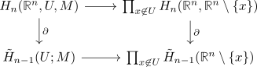

inclusion of relative homology into product
Proposition
Let $U \subseteq \mathbb{R}^n$ be open. Then the induced map
is injective
Proof
Consider

Let $\alpha \in \mathrm{ker}(\tilde{H}_{n-1}(U) \rightarrow \prod_{x \not\in U} \tilde{H}_{n-1}(\mathbb{R}\mathbb{P}^n \setminus \{x\})$. Then there exists a compact $K \subseteq U$ such that
w.l.o.g. $K = \overline{\mathrm{int}(K)}$
Choose a closed ball $C$ containing $K$
Then for each $x \in C \setminus U$ choose a closed ball $B_x$ disjoint from $K$.
Since $C \setminus U \subseteq C$ is closed hence compact we conclude that finitely many $B_{x_i}$ suffice showing
Then
where $D_i = C \cap B_{x_i}$
Proof by induction Let $b \in \tilde{H}_{n-1}(K)$ be a preimage of $a$. Then
induction basis
for $r = 0$ this follows as $C \cong \{*\}$ up to homotopy
induction step
using Komplementbildung unter Schnitt und Vereinigung
Then it follows that $D_{i}$ is closed resp. $\mathrm{int}(c) \setminus \bigcup_{i=1}^r D_i, \mathbb{R}^n \setminus D_{r+1}$ are open.
Therefore
\begin{displaymath}
\begin{tikzcd}
\tilde{H}_{n-1}(C \setminus \bigcup_{i=1}^r+1} D_i) & \tilde{H}_{n-1}(\mathrm{int}(C) \setminus \bigcup_{i=1}^r D_i) \oplus \tilde{H}_{n-1}(\mathbb{R}^n \setminus D_{r+1})
\end{tikzcd}
\end{displaymath}By induction
and by assumption we also get
resp.
IT remains to show that the map
using the mayer vietoris for singular homology
TODO: